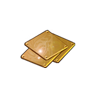

Получено: файл; исходный URL. Оригинальные байты с указанного зеркала; идентичность архивному файлу не проверена.
Лист золота
Мой Мир; историческая таблица, дата редакции не установлена- Тип
- нет данных
- Покупка
- 4 Зб; место покупки не указано
- Продажа
- 7000 монет
- Как получить
- Изготовить в Университете из жёлтой краски и монет Получить за Звёздную коллекцию
- Применение
- Участвует в строительстве: Замок Башня Глаз-Алмаз Вождь Особняк Белый дом Флаг Беларуси Флаг России Флаг Украины
- Особенности
- нет данных
- Версия и дата
- Мой Мир; историческая таблица, дата редакции не установлена


Данные по источнику · Мой Мир · 20.06.2011
Предварительно: один источник; требует сверки. Требуется сверка.
- Покупка
- 4 зомбаксов (по источнику)
- Продажа
- 7 000 монет
- Получение
- Университет из жёлтой краски и монет; звёздная коллекция
- Применение
- Замок, башня, глаз-алмаз, вождь, особняк, Белый дом и флаги
Данные по источнику · ВКонтакте, ZOMBIA · 28 Июня 2011, 20:37; дата редакции не установлена
Предварительно: Данные одной исторической фанатской страницы; цифры и подписи изображений требуют сверки. Описание и условия сохранены по колонкам без додумывания.. Требуется сверка.
- Описание материала
- [изображение: Лист золота, зомби ферма, зомби мания] Лист золота 7000 монет 4 Зомбакса
- Участвует в строительстве
- нет текстовых данных; возможны неподписанные изображения
- Как достать
- Произвести в Университете также, можно получить за Звёздную Коллекцию
- Участвует в создании
- нет текстовых данных; возможны неподписанные изображения
Данные по источнику · браузерная версия; платформа не указана · дата редакции неизвестна
Предварительно: Подписи и последовательность пиктограмм перенесены без автоматического толкования. Названия, цены и направления стрелок требуют визуальной сверки; возможны ошибки самого сайта.. Требуется сверка.
- Колонка 1 в порядке пиктограмм
- [подпись: Лист золота; файл list_zolota.png] [подпись: Стоимость (Зомбаксов); файл zombucks.png] 4 [подпись: Продажа; файл moneta.png] 7000
- Колонка 2 в порядке пиктограмм
- [значок: proizvoditsya.png] [подпись: Университет; файл universitet.png]
- Колонка 3 в порядке пиктограмм
- [значок: stroit.png] [подпись: Модернизированный Маяк; файл mayak-modern.png] [подпись: Замок; файл zamok.png] [подпись: Башня; файл bashnya.png] [подпись: Глаз-алмаз; файл glaz-almaz.png] [подпись: Вождь; файл vogd.png] [подпись: Особняк; файл osobnyak.png] [подпись: Белый Дом; файл beliy_dom.png] [подпись: Флаг Белоруси; файл flag_belorusy.png] [подпись: Флаг России; файл flag_rossii.png] [подпись: Флаг Украины; файл flag_ukrainy.png] [подпись: Флаг СССР; файл flag_sssr.png]
- Колонка 4 в порядке пиктограмм
- [значок: sosdanie.png]
- Колонка 5 в порядке пиктограмм
- [значок: poluchit.png] [подпись: Звёздная Коллекция; файл zvezdnaya.png]
Данные по источнику · браузерная Зомби Ферма / Зомби Мания; платформа требует проверки · дата URL не гарантирует дату редакции
Предварительно: Индивидуальная страница прочитана автоматически, подписи значков могут содержать ошибки; даты редакции и независимость от ЗомбиСити не установлены.. Требуется сверка.
- Основной блок страницы и подписи изображений
- Материал [иллюстрация: Лист золота] Лист золота Цена покупки: 4 [иллюстрация: Зомбаксы] Цена продажи: 7000 [иллюстрация: Монеты] Продать или купить Листы золота можно в Обменке игры Зомби Ферма Лист золота - старый материал Зомби Фермы. Его можно произвести, можно добыть палочками, выкопать, получить за обмен коллекции. Листы золота так же иногда выпадают из чемоданов, оставленных на дороге туристами. Лист золота можно добыть палочками-выручалочками из ресурсов подземелья и декора: Сталагмит вытянутый [иллюстрация: Сталагмит вытянутый] Сталагмит вытянутый [иллюстрация: Сталагмит вытянутый] Сталагмит круглый [иллюстрация: Сталагмит круглый] Сталагмит круглый [иллюстрация: Сталагмит круглый] Сталагмит фиолетовый [иллюстрация: Сталагмит фиолетовый] Сталагмит фиолетовый [иллюстрация: Сталагмит фиолетовый] Сталагмит желтый [иллюстрация: Сталагмит желтый] Позитивный Валентин [иллюстрация: Позитивный Валентин] Настоящий Валентин [иллюстрация: Настоящий Валентин] Желтая собака [иллюстрация: Декорация Желтая собака] Драгоценный цветок [иллюстрация: Декорация Драгоценный цветок] Золотые листы создаются в Университете: Лист золота [иллюстрация: Лист золота] = 2 Желтая краска [иллюстрация: Желтая краска] + 2 Металл [иллюстрация: Металл] [иллюстрация: Стрелка] Университет [иллюстрация: Университет] Лист золота дается за коллекцию, попадается в Чемоданах и сокровищах: Звёздная [иллюстрация: Звёздная Коллекция] Чемодан [иллюстрация: Чемодан туриста] Икебана [иллюстрация: Икебана] Сундук [иллюстрация: Сундук] Горшочек [иллюстрация: Горшочек] Горшочек с золотом [иллюстрация: Горшочек с золотом] Лист золота участвует в создании материала: Золотая рыбка [иллюстрация: Золотая рыбка] = 1 Язь [иллюстрация: Язь] + 5 Лист золота [иллюстрация: Лист золота] [иллюстрация: Стрелка] Пруд [иллюстрация: Пруд] Золотые листы применяются в строительстве зданий: Замок [иллюстрация: Замок] Маяк [иллюстрация: Маяк] Башня [иллюстрация: Башня] Глаз-алмаз [иллюстрация: Глаз-алмаз] Вождь [иллюстрация: Вождь] Особняк [иллюстрация: Особняк] Белый дом [иллюстрация: Белый дом] Купидон [иллюстрация: Купидон] Лестница в небо [иллюстрация: Лестница в небо] Школа [иллюстрация: Школа] Хижина [иллюстрация: Хижина] Флаг Беларуси [иллюстрация: Флаг Беларуси] Флаг Украины [иллюстрация: Флаг Украины] Флаг России [иллюстрация: Флаг России] Флаг СССР [иллюстрация: Флаг СССР] Флаг Казахстана [иллюстрация: Флаг Казахстана] Флаг Германии [иллюстрация: Флаг Германии] Флаг Динамо Киев [иллюстрация: Флаг Динамо Киев] Зомби-вертикаль [иллюстрация: Зомби-вертикаль] Золотой слон [иллюстрация: Золотой слон] Школьный автобус [иллюстрация: Школьный автобус] Ковёр-самолёт [иллюстрация: Ковёр-самолёт] Казино [иллюстрация: Казино] Библиотека [иллюстрация: Библиотека] В склад Хакера [иллюстрация: В склад Хакера] Тайная шахта [иллюстрация: Тайная шахта] Изумрудный замок [иллюстрация: Изумрудный замок] Замок-призрак [иллюстрация: Замок-призрак] Любовь Слоника [иллюстрация: Любовь Слоника] Купол [иллюстрация: Купол] Таверна [иллюстрация: Таверна] Желтая трава [иллюстрация: Желтая трава] Загадочная лодка [иллюстрация: Загадочная лодка] Финиш [иллюстрация: Финиш] Флаг Кореи [иллюстрация: Флаг Кореи] Лист золота можно выкрутить в рулетке: Карапуз рулетка [иллюстрация: Карапуз] При копании Лопатами, иногда можно выкопать Лист золота: Праздничная ель [иллюстрация: Праздничная ель] Синий клеверок [иллюстрация: Синий клеверок] Синий [иллюстрация: Синий] Изумрудная арка [иллюстрация: Изумрудная арка] Изумрудная арка [иллюстрация: Изумрудная арка] Изумрудный забор [иллюстрация: Изумрудный забор] Изумрудный забор [иллюстрация: Изумрудный забор] Груда тыкв [иллюстрация: Груда тыкв] Видео - Где выпадают Золотые листы в Зомби Ферме
Текст источника без реконструкции
Изготовить в Университете из жёлтой краски и монет Получить за Звёздную коллекцию Участвует в строительстве: Замок Башня Глаз-Алмаз Вождь Особняк Белый дом Флаг Беларуси Флаг России Флаг Украины